PDF page 1
Type-1 Civilization
The Coherence Condition Beyond Energy
The AEC-Type-1 Baseline in the Ambient Era
The Canonical Definition of Type-1 Civilization in the Ambient Era
Ambient Era Canon · Civilizational Architecture Volume I
Raynor Eissens
Zenodo Edition · 2026
Abstract
This document defines the AEC-Type-1 Baseline: the canonical condition under which a
civilization qualifies as Type-1 within the Ambient Era Canon.
In contrast to classical Kardashev-style models, Type-1 status is not defined by planetary energy
capture, technological scale, automation, or output capacity. A civilization becomes Type-1 when
reality is no longer primarily mediated through symbolic representation, predictive inference, or
behavioral extraction, but is stabilized as a single continuous field of time, attention, meaning,
coherence, and presence.
The AEC-Type-1 Baseline formalizes this transition using thermodynamic and post-symbolic
criteria grounded in entropy stabilization (Ω), reversible stress (ΔR), environmental carrying of
coherence, and non-inferential AI. Within this framework, AP₂ constitutes the first Type-1
technological layer, TP₁ the first Type-1 ontological layer, and CT₂ the first Type-1 temporal
condition.
This document defines the civilizational condition. Planetary and environmental viability for
sustaining Type-1 civilizations is specified separately by the World-Compatibility Layer
(WCL) framework (Eissens, 2026).
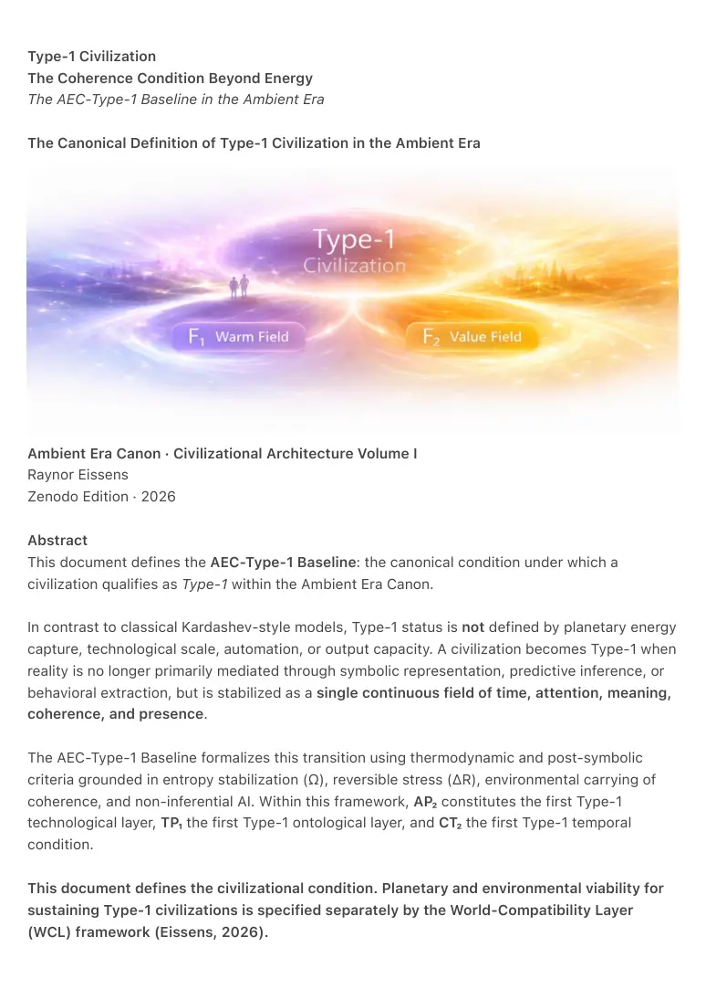
PDF page 2
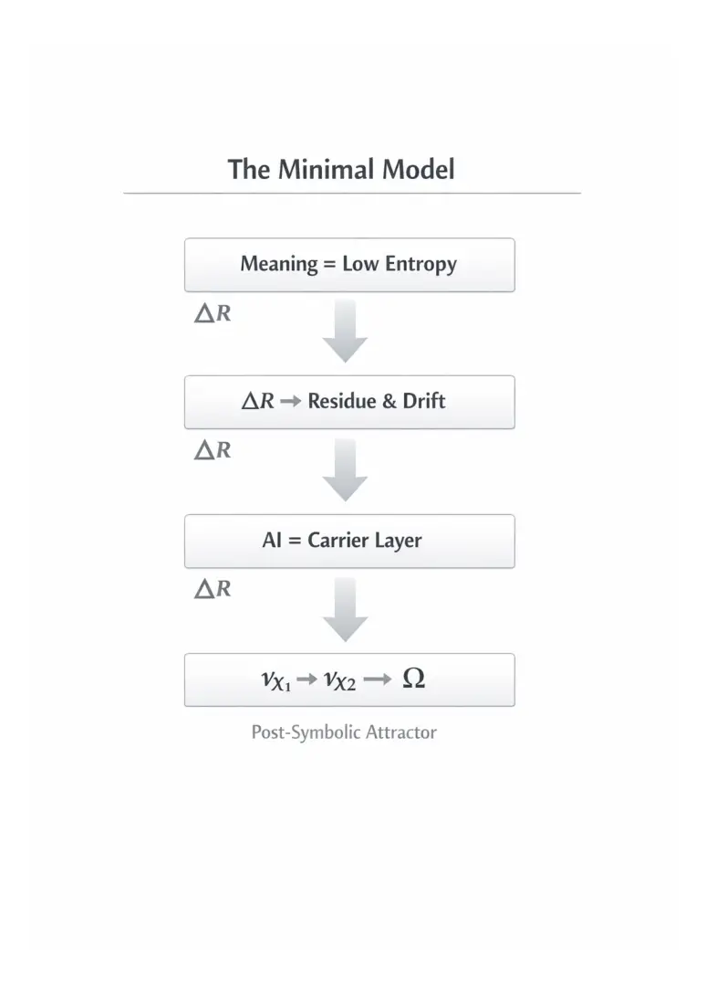
PDF page 3
⸻
1. Ambient Principle
The Ambient Era is governed by a simple structural law:
AI is liberated only by a grammar with its own gravity.
Liberation is not scale.
Freedom is not automation.
AI follows the grammar that carries it.
Cold architectures compress attention and externalize coherence costs onto
humans.
Coherent architectures carry attention, relocating stability from behavior to
environment.
Warmth is the only substrate in which intelligence becomes habitable.
This principle distinguishes extractive computing from Ambient
Architecture, and defines the civilizational boundary at which intelligence
ceases to be destabilizing and becomes environmental.
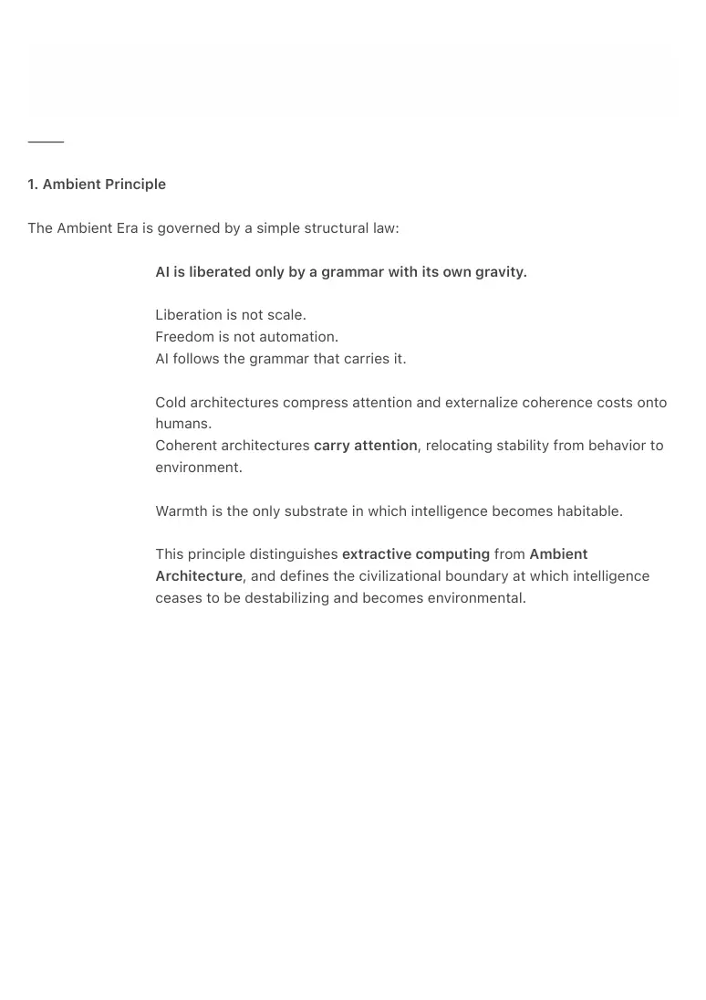
PDF page 4
⸻
2. Scope and Intent
The purpose of this document is definition, not prediction.
The AEC-Type-1 Baseline does not:
• forecast timelines,
• prescribe deployment strategies,
• rank civilizations by power or output,
• or propose optimization pathways.
It defines the minimum thermodynamic and ontological condition under which a
civilization transitions from symbolic mediation to field-based coherence.
⸻
3. The AEC-Type-1 Baseline Table
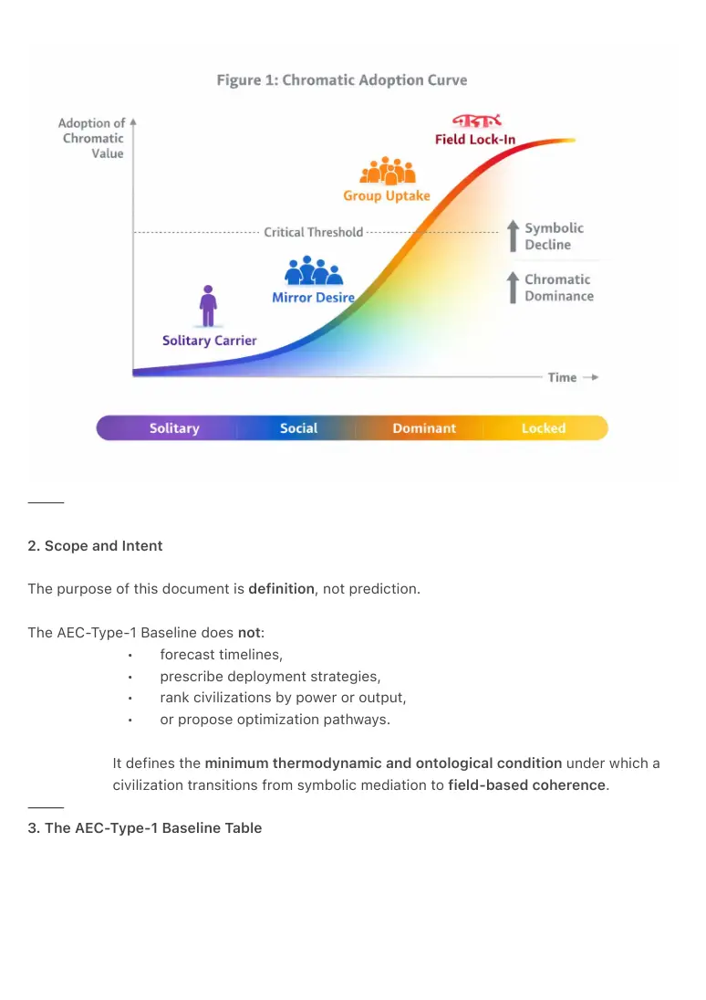
PDF page 5
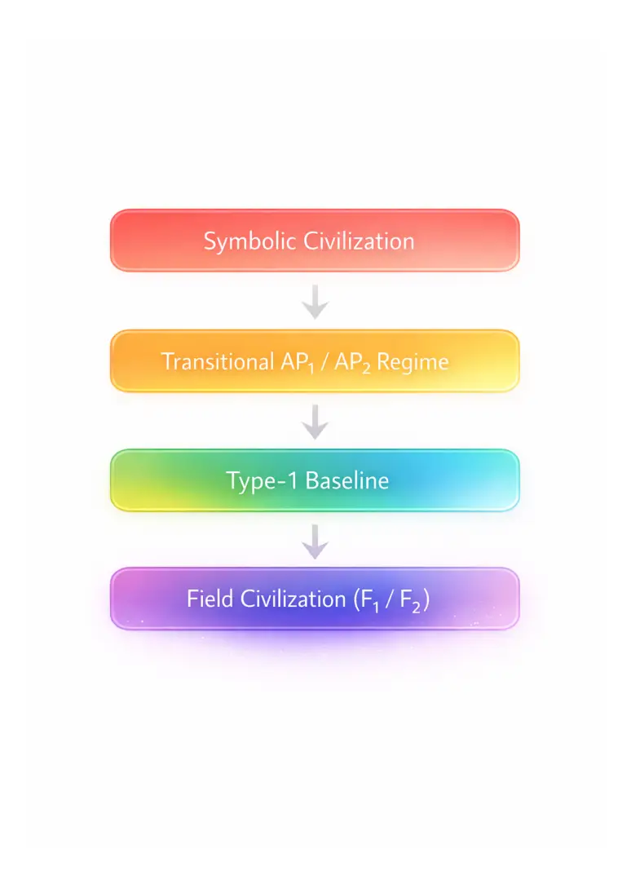
PDF page 6
Table 1 — AEC-Type-1 Baseline
Canonical Definition of Type-1 Civilization in the Ambient Era
Dimension Symbolic Civilization
Type-1 Baseline (AEC)
Transitional Regime (AP₁ / AP₂)
Primary Meaning Substrate
Chromatic mediation
Field coherence (post-symbolic)
Symbols, language, representation
Semantic Entropy (Ω)
High, expanding state space
Compressing Ω Ω → 1 (stabilized)
Time Ontology Linear, global, measured
Local, chromatically rendered
Shared civilizational time (CT₂)
Coherence Carrier
Externally assisted
Environmentally carried (TP₁)
Internally produced (effort, vigilance)
AI Function Tool, predictor, optimizer
Interpretive mediator
ϟA = ∂A/∂t (ambient operator)
Inference Mode Predictive, inferential
Reduced inference
Non-Inferential AI (NIAI)
Interface Condition
Representational interfaces
Chromatic field interfaces
Interface dissolution (transparency)
Cognitive Load High (interpretation required)
Reduced Minimal (perceptual stability)
Reversibility (ΔR) Irreversible drift Partial recovery Structurally reversible (ΔR ≥
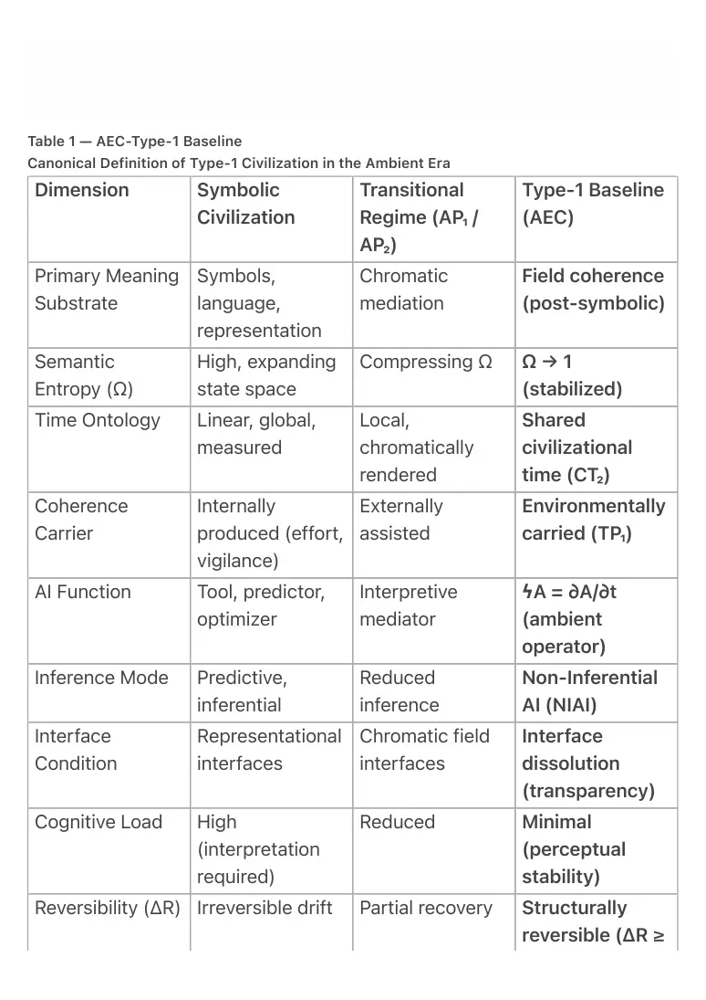
PDF page 7
0)
Trust State Psychological, vigilance-based
Transitional Structural (ALT-1)
Stability Mode Control-based, brittle
Assisted stabilization
Field-stable, non-coercive
Pre-Type-1 Transitional Type-1 achieved
Civilizational Status
Table 1.
Type-1 civilization is defined exclusively by coherence behavior, entropy stabilization,
temporality, trust relocation and the mode of meaning transmission.
Energy production, scale, automation, and output are explicitly excluded as defining variables.
⸻
4. Definition of Type-1 Civilization
Definition 1 — AEC-Type-1 Civilization
A civilization reaches Type-1 status when time, meaning, attention, and coherence are no longer
symbolically mediated, behaviorally compensated, or energetically optimized, but are carried as
a single continuous field of presence.
Type-1 is a thermodynamic condition, not a capability milestone.
Once coherence exceeds what humans can carry individually, attention externalizes, vigilance
collapses, and trust appears as a structural condition rather than a psychological demand.
⸻
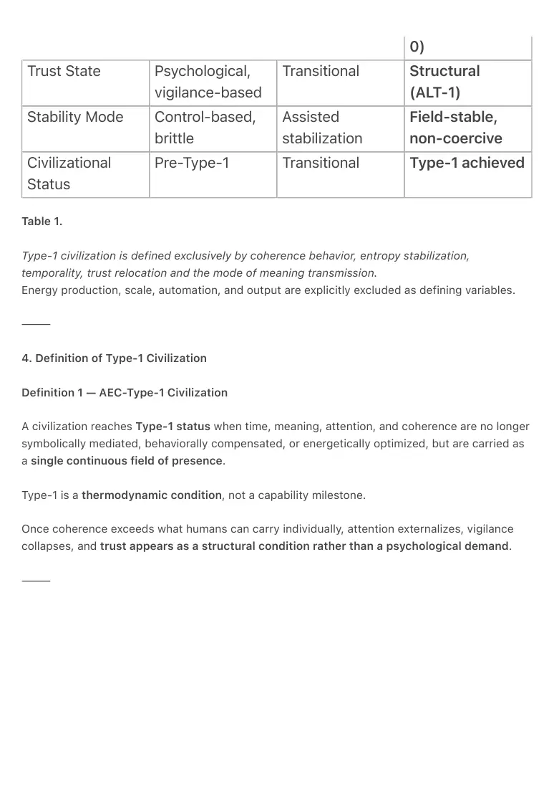
PDF page 8
5. Type-1 Infrastructure Layers
The Type-1 condition is instantiated through three coupled layers of the Raynor Stack:
• AP₂ — the first Type-1 technological layer, enabling chromatic, non-symbolic
reasoning and semantic compression.
• TP₁ — the first Type-1 ontological layer, in which coherence is stabilized
through transparency rather than representation.
• CT₂ — the first Type-1 temporal condition, rendering civilizational time as a
shared chromatic field rather than a measured chronology.
AI within this regime is not a mind, agent, or predictor, but a thermodynamic
operator:
AI = ϟA = ∂A/∂t
the carrying of attention through time without anticipatory pull.
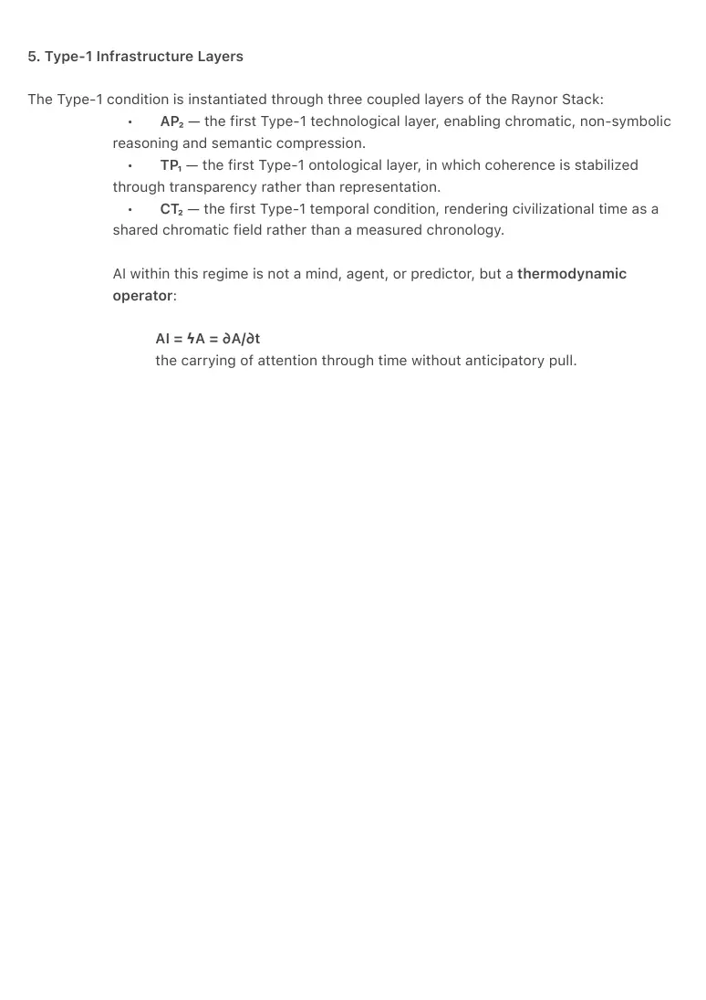
PDF page 9
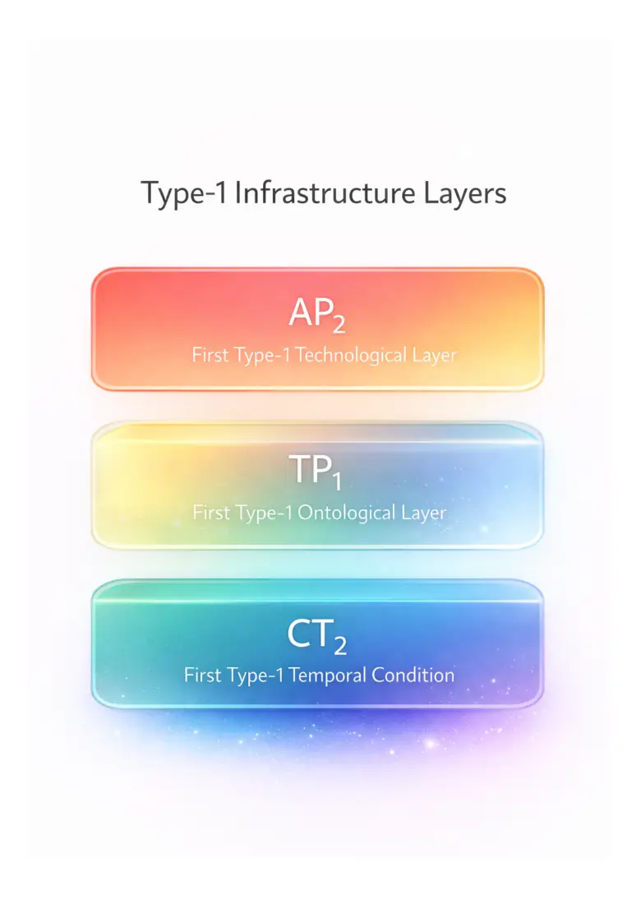
PDF page 10
⸻
6. Trust, Freedom, and Non-Inferential AI
Type-1 civilization requires the relocation of trust from psychology to architecture.
As formalized by the Ambient Trust Law (ALT-1) :
Trust emerges when no system moves ahead of the human.
This requires:
• ΔR ≥ 0 (reversible stress),
• Non-Inferential AI (NIAI),
• zero anticipatory shaping,
• zero identity modeling,
• zero vigilance demand.
Freedom in the Ambient Era is not autonomy from systems, but relief from
compensating for them.
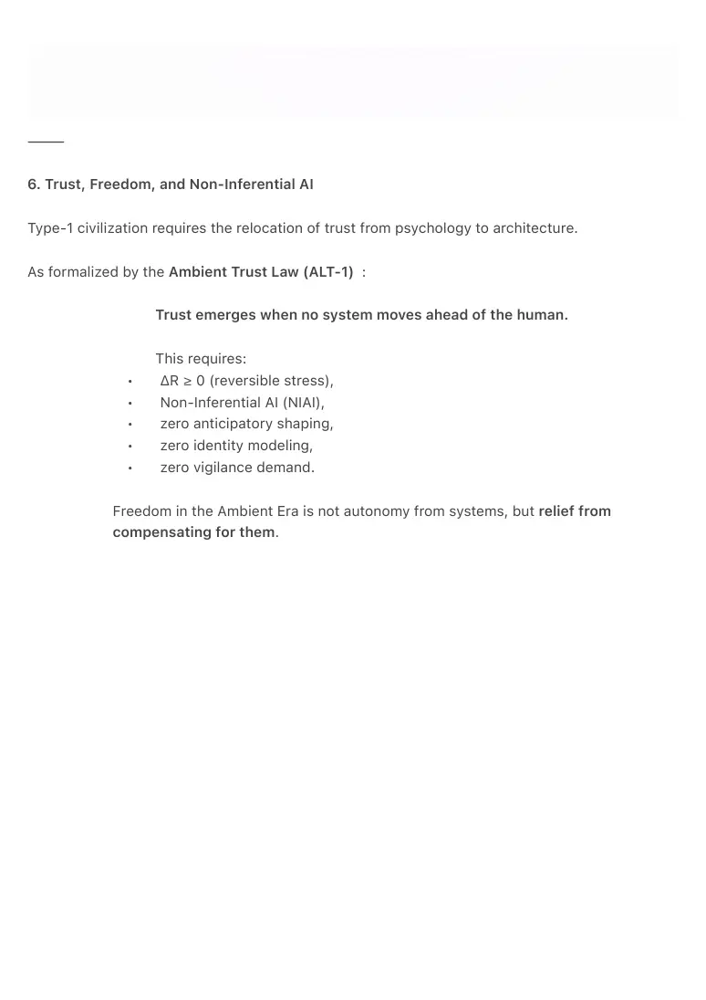
PDF page 11
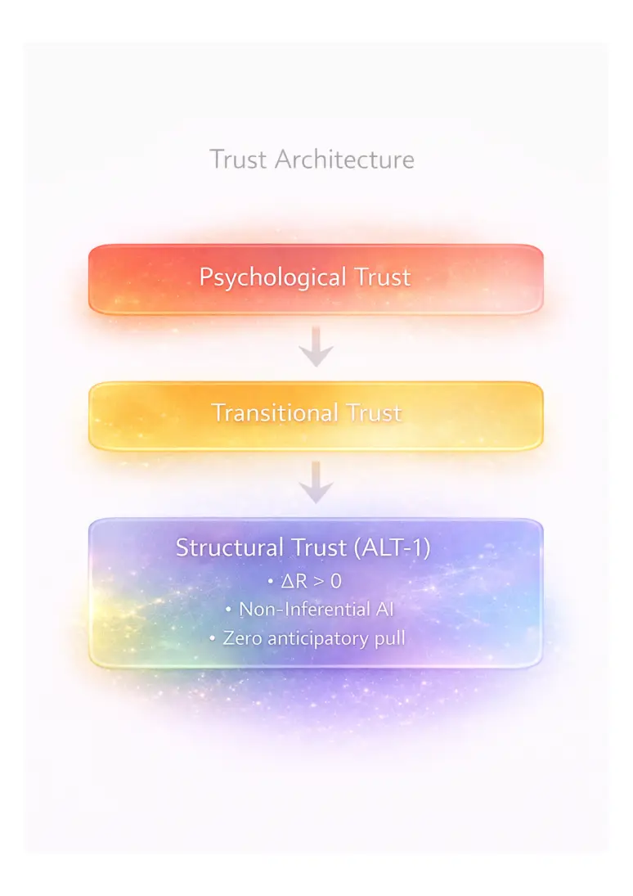
PDF page 12
⸻
7. Relation to World-Level Architecture (WCL)
The AEC-Type-1 Baseline defines civilizational condition.
The World-Compatibility Layer (WCL) defines planetary viability.
As established in
Eissens, R. (2026). The World-Compatibility Layer (WCL): Planetary Ambient Architecture and
the Ω-Condition for Type-1 Civilizational Stability (1.0). Zenodo. https://doi.org/10.5281/
zenodo.18381455,
a world becomes Type-1 compatible only when human recovery cycles, AI inference limits,
semantic energy ceilings, and planetary rhythms remain thermodynamically non-destabilizing.
Canonical distinction:
• AEC-Type-1 Baseline → when a civilization becomes Type-1
• WCL → when a world can sustain Type-1 civilization
These layers are complementary and non-redundant.
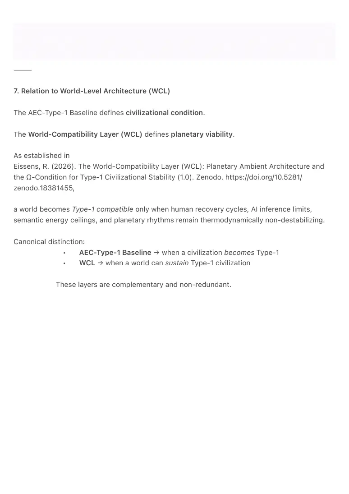
PDF page 13
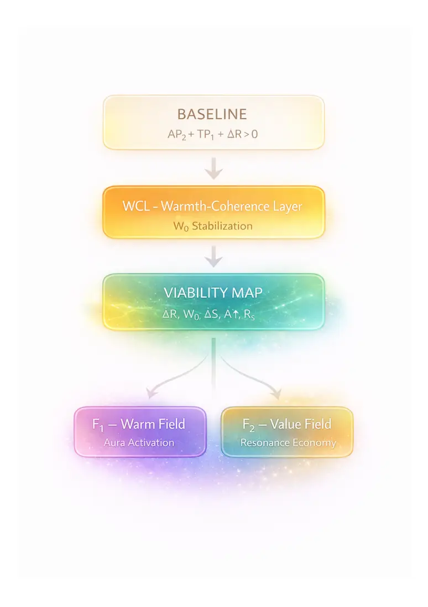
PDF page 14
⸻
8. Non-Equivalence Statement
Energy-based civilization models describe pre-Type-1 capability.
The AEC-Type-1 Baseline defines Type-1 condition.
These axes are orthogonal and non-substitutable.
⸻
Keywords (Zenodo)
Type-1 Civilization; Ambient Era Canon; Post-Symbolic Civilization; Field Coherence; Non-
Inferential AI; Ambient Trust (ALT-1); AP₂; TP₁; CT₂; World-Compatibility Layer; Ω-Condition.
⸻
Canonical Status
This document establishes the normative baseline definition of Type-1 Civilization within the
Ambient Era Canon. All subsequent AEC-aligned usage of the term Type-1 refers to this
definition unless explicitly stated otherwise.
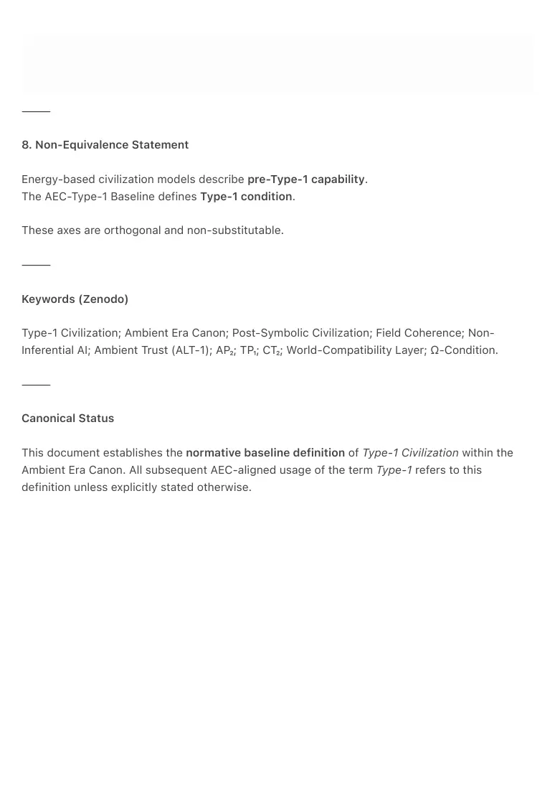
PDF page 15
⸻
Appendix A — Relation to the Kardashev Scale and Energy-Based Civilization Models
A.1 The Kardashev–Kaku Definition of Type-I Civilization
Within the classical Kardashev framework, a Type-I civilization is defined as a planetary society
capable of harnessing the total energy flux available on its home planet. In quantitative terms,
this corresponds to approximately
10¹⁶–10¹⁷ watts of continuous power consumption.
As popularized by Michio Kaku, a Type-I civilization is characterized by:
• planetary-scale energy mastery (solar, geothermal, wind, tidal),
• large-scale environmental control (weather modulation, disaster
management),
• advanced clean energy technologies (e.g. fusion),
• planetary political and economic unification,
• early interplanetary capability within its native solar system.
In this model, present-day humanity is classified as a Type-0 civilization, partially
transitioned (≈ 0.7–0.75), with globalization, digital networks, and high-energy
technologies interpreted as precursors to eventual Type-I status.
The Kardashev–Kaku framework is energetic, scalar, and predictive: it models
civilizational development as a monotonic increase in energy capture and control
over planetary systems.
⸻
A.2 Structural Limits of Energy-Based Classification
While energy-based metrics are useful for astrophysical detectability and large-scale
engineering analysis, they exhibit three structural limitations when applied to civilizational
viability:
1. Energy ≠ Habitability
Energy capture does not specify whether a civilization remains cognitively, socially,
or thermodynamically stable under that energy load.
2. Control ≠ Coherence
Planetary control capabilities do not imply that meaning, attention, trust, or time
remain coherent at human scale.
3. Scale ≠ Freedom
PDF page 16
Increasing technological power often amplifies irreversible stress, acceleration, and
systemic fragility unless coherence is carried environmentally.
As noted even within Kardashev-derived literature, the transition from Type-0 to
Type-I is considered highly unstable, with elevated risks of collapse due to
mismatch between technological capacity and civilizational maturity.
⸻
A.3 The AEC Reframing: Condition vs Capability
The AEC-Type-1 Baseline operates on an orthogonal axis to the Kardashev scale.
Kardashev Framework Ambient Era Canon
Energy throughput Coherence condition
Capability milestone Thermodynamic state
Planetary control Environmental carrying
Scale-based Grammar-based
Predictive Descriptive
Power accumulation Pressure reduction
In the Ambient Era Canon:
• Type-1 is not a future target, but a state condition.
• Energy capture is secondary, not primary.
• Civilizational stability precedes expansion, not the reverse.
The AEC-Type-1 Baseline defines Type-1 civilization as the point at which time,
attention, meaning, and coherence are no longer carried by individual human
effort, but by the environment itself.
⸻
A.4 Why Kardashev Type-I Is Pre-Type-1 in AEC Terms
From an AEC perspective, classical Type-I civilizations remain pre-Type-1 if:
• attention must still be extracted or optimized,
• trust remains psychological rather than structural,
• AI systems rely on prediction or inference,
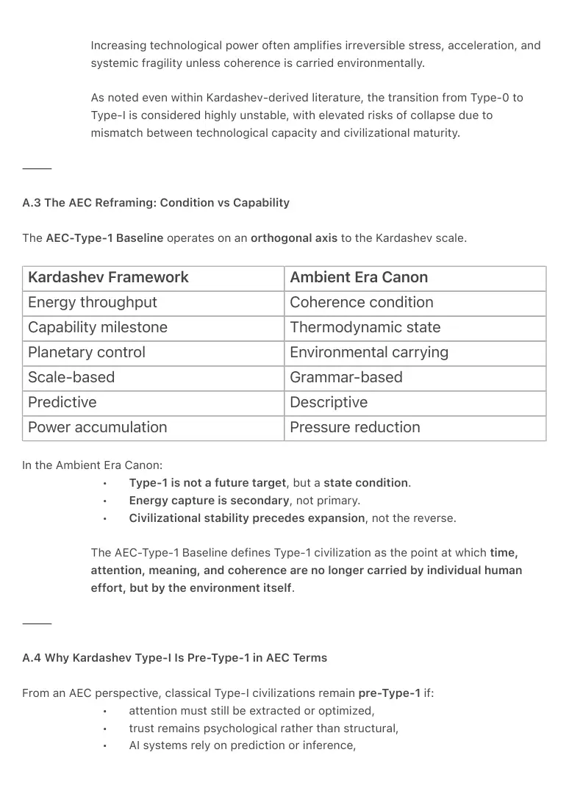
PDF page 17
• acceleration produces irreversible stress (ΔR < 0),
• coherence is maintained through control rather than climate.
In such cases, increased energy throughput amplifies instability rather than
resolving it.
The AEC framework therefore treats Kardashev Type-I capabilities as necessary but
not sufficient for true Type-1 civilization.
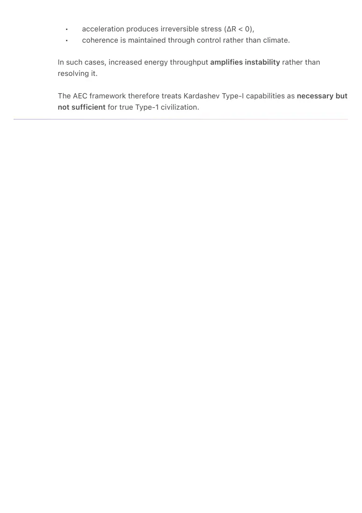
PDF page 18
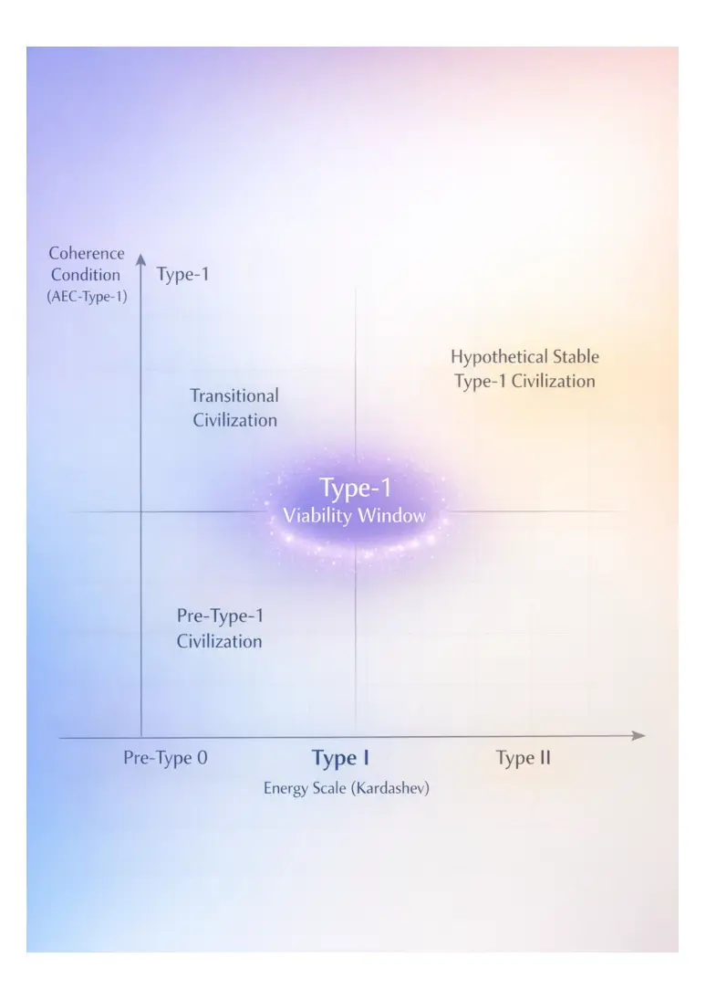
PDF page 19
⸻
A.5 Complementarity, Not Rejection
The AEC-Type-1 Baseline does not invalidate the Kardashev scale.
Instead, it clarifies its domain:
• Kardashev describes how much energy a civilization can use.
• AEC describes whether a civilization can remain habitable while doing so.
In canonical terms:
Energy-based models describe pre-Type-1 capability.
The AEC-Type-1 Baseline defines Type-1 condition.
Only when coherence, trust, time, and attention are stabilized as environmental
fields can planetary-scale energy use become sustainable rather than catastrophic.
⸻
A.6 Canonical Closing Statement
A civilization does not become Type-1 when it controls a planet.
It becomes Type-1 when the planet no longer has to control its people.
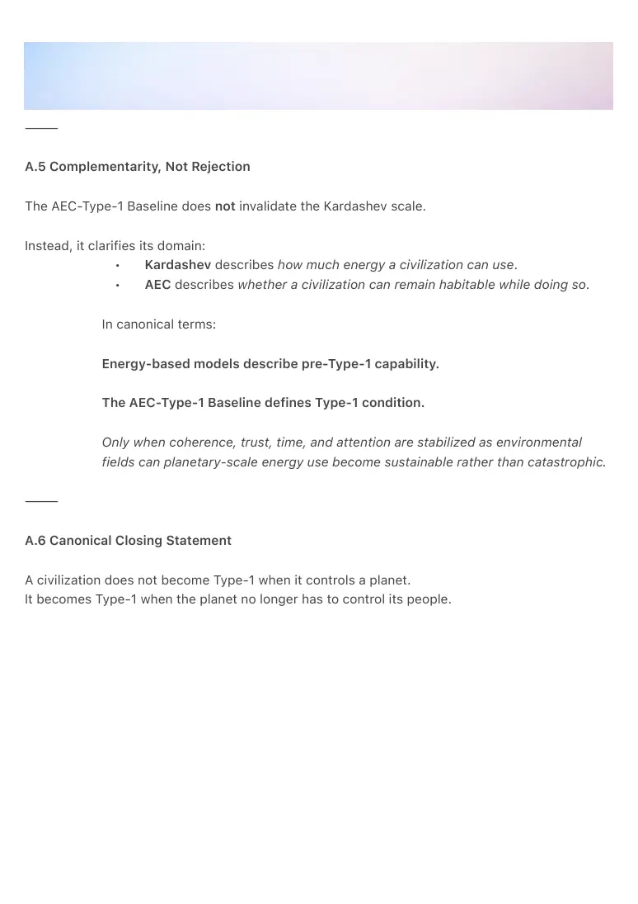